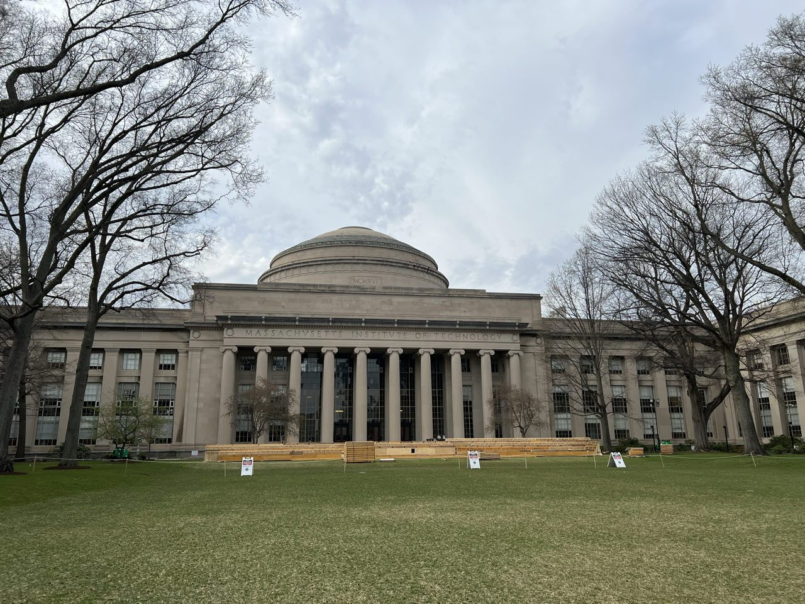
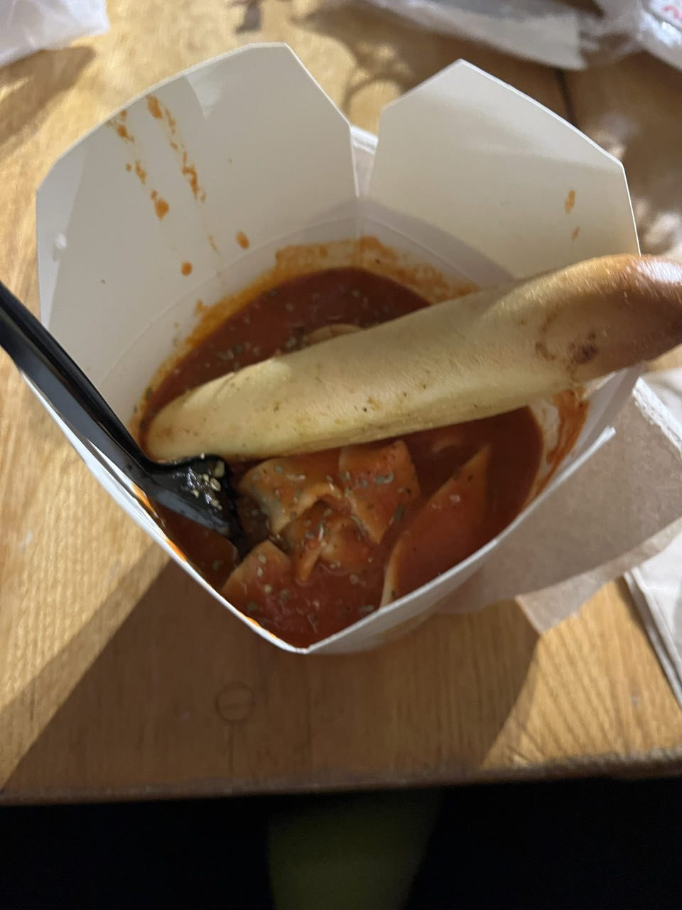
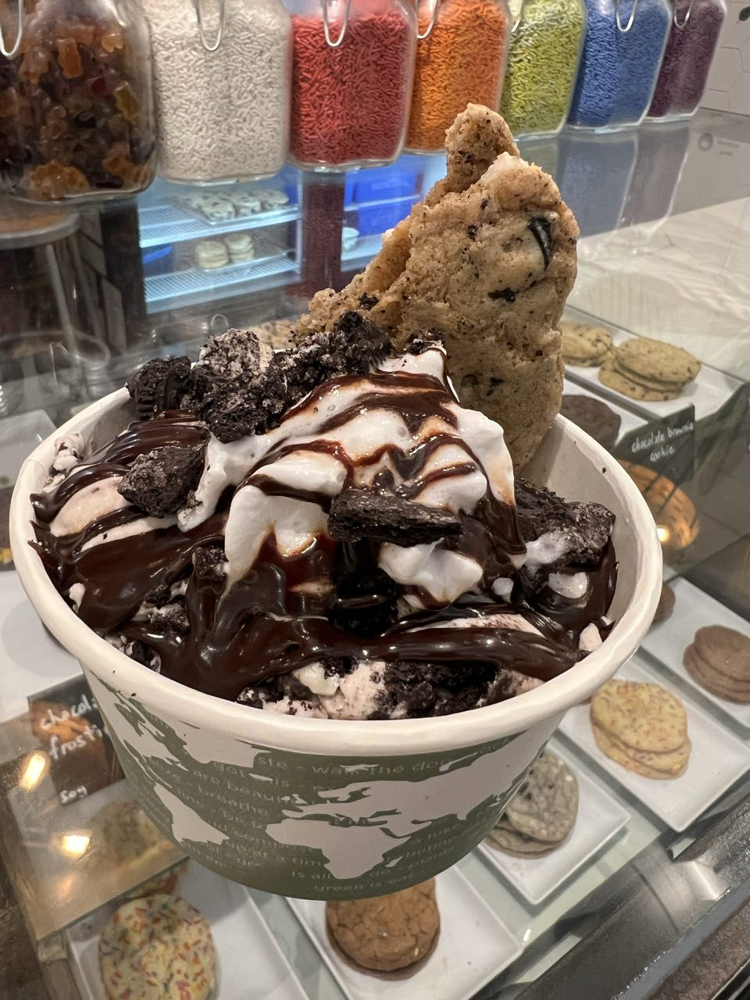

Vendredi · Ville & culture
Harvard et le MIT, en tant qu'ingénieur
Arrivée à Harvard, resto végan excellent puis visite du campus — immense et ancien, à mille lieues de la démesure des autres villes américaines traversées. Direction ensuite le MIT : en tant qu'ingénieur, une visite particulièrement marquante, avec des laboratoires exposant les toutes dernières technologies, celles qu'on ne voit d'ordinaire qu'à la télé ou dans les articles scientifiques.
Installation à l'hôtel puis direction le centre-ville, plus précisément Quincy Market, où chacun choisit son petit restaurant pour le dîner — pâtes et glace végane pour finir la soirée en beauté.


